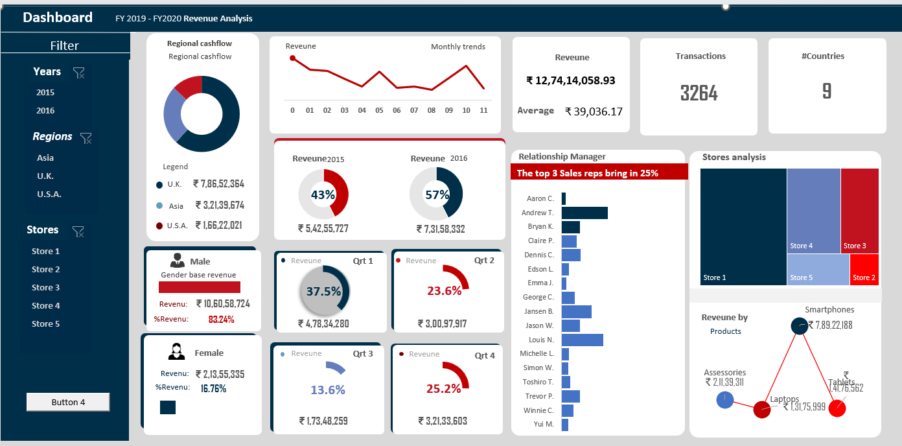

Microsoft Excel
Data visualization and analytics
By harnessing advanced Excel functionalities such as power query, power pivot, data modeling, DAX, VBA, and Macro, I have developed a dynamic dashboard. This dashboard not only simplifies data interpretation but also improves decision-making processes.With just a click, the Dashboard converts into a PPT based on the selected category filters.
Interact

Revenue Analysis report
This Excel report summarizes and analyzes revenue data. It includes charts, graphs, and tables to visualize trends, identify patterns, and assess performance. Key metrics such as total revenue, revenue by product or service, revenue growth, and profitability are often highlighted. The report helps businesses make informed decisions, optimize strategies, and forecast future revenue streams.
Learn more